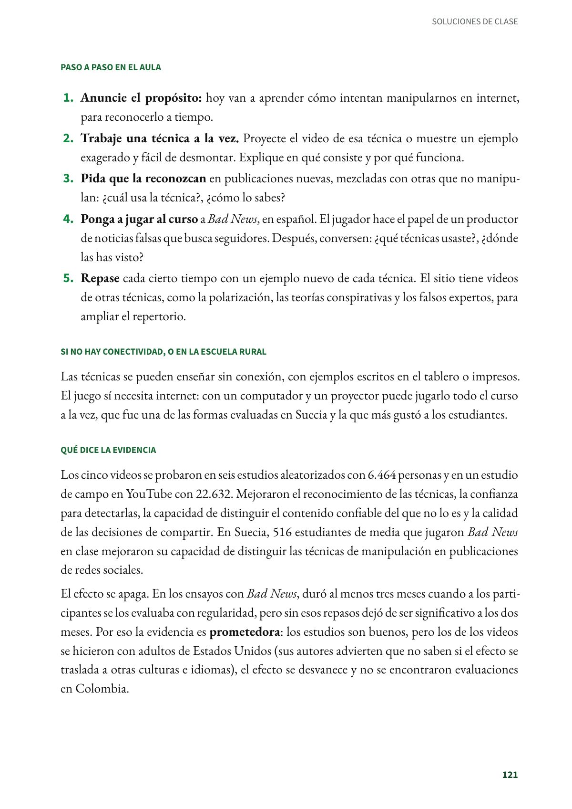
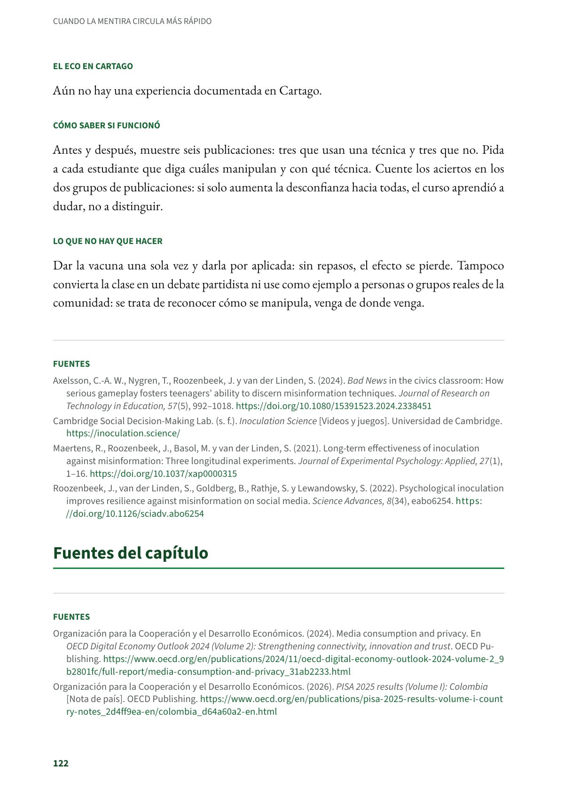

Vacunar contra la manipulación antes de que llegue: el prebunking
Funciona como una vacuna. Antes de que los estudiantes se encuentren con la manipulación, se les advierte que alguien intentará engañarlos y se les muestra una dosis débil de la técnica, con su explicación. Secundaria y media. Evidencia prometedora.
PDF · 3 págs. · 73 KBEn resumen
- Evidencia: prometedora.
- Para quién: Secundaria y media. Ciencias sociales, lenguaje, ética y tecnología e informática.
- Tiempo: Una o dos clases para empezar y repasos breves durante el año. Cada video dura un minuto y medio.
- Materiales: Los videos y juegos gratuitos de Inoculation Science; el juego Bad News tiene versión en español. Ejemplos de publicaciones reales.
- De dónde viene: Reino Unido: Universidad de Cambridge, con la Universidad de Bristol y Jigsaw de Google. Evaluado también en aulas de Suecia.
Qué es
Funciona como una vacuna. Antes de que los estudiantes se encuentren con la manipulación, se les advierte que alguien intentará engañarlos y se les muestra una dosis débil de la técnica, con su explicación. Así aprenden a reconocerla cuando llega de verdad. Las cinco técnicas de los primeros videos son el lenguaje emocional (el que busca miedo o indignación), la incoherencia, el falso dilema, el chivo expiatorio y el ataque personal.
Paso a paso en el aula
- Anuncie el propósito: hoy van a aprender cómo intentan manipularnos en internet, para reconocerlo a tiempo.
- Trabaje una técnica a la vez. Proyecte el video de esa técnica o muestre un ejemplo exagerado y fácil de desmontar. Explique en qué consiste y por qué funciona.
- Pida que la reconozcan en publicaciones nuevas, mezcladas con otras que no manipulan: ¿cuál usa la técnica?, ¿cómo lo sabes?
- Ponga a jugar al curso a Bad News, en español. El jugador hace el papel de un productor de noticias falsas que busca seguidores. Después, conversen: ¿qué técnicas usaste?, ¿dónde las has visto?
- Repase cada cierto tiempo con un ejemplo nuevo de cada técnica. El sitio tiene videos de otras técnicas, como la polarización, las teorías conspirativas y los falsos expertos, para ampliar el repertorio.
Si no hay conectividad, o en la escuela rural
Las técnicas se pueden enseñar sin conexión, con ejemplos escritos en el tablero o impresos. El juego sí necesita internet: con un computador y un proyector puede jugarlo todo el curso a la vez, que fue una de las formas evaluadas en Suecia y la que más gustó a los estudiantes.
Qué dice la evidencia
Los cinco videos se probaron en seis estudios aleatorizados con 6.464 personas y en un estudio de campo en YouTube con 22.632. Mejoraron el reconocimiento de las técnicas, la confianza para detectarlas, la capacidad de distinguir el contenido confiable del que no lo es y la calidad de las decisiones de compartir. En Suecia, 516 estudiantes de media que jugaron Bad News en clase mejoraron su capacidad de distinguir las técnicas de manipulación en publicaciones de redes sociales.
El efecto se apaga. En los ensayos con Bad News, duró al menos tres meses cuando a los participantes se los evaluaba con regularidad, pero sin esos repasos dejó de ser significativo a los dos meses. Por eso la evidencia es prometedora: los estudios son buenos, pero los de los videos se hicieron con adultos de Estados Unidos (sus autores advierten que no saben si el efecto se traslada a otras culturas e idiomas), el efecto se desvanece y no se encontraron evaluaciones en Colombia.
El eco en Cartago
Aún no hay una experiencia documentada en Cartago.
Cómo saber si funcionó
Antes y después, muestre seis publicaciones: tres que usan una técnica y tres que no. Pida a cada estudiante que diga cuáles manipulan y con qué técnica. Cuente los aciertos en los dos grupos de publicaciones: si solo aumenta la desconfianza hacia todas, el curso aprendió a dudar, no a distinguir.
Lo que no hay que hacer
Dar la vacuna una sola vez y darla por aplicada: sin repasos, el efecto se pierde. Tampoco convierta la clase en un debate partidista ni use como ejemplo a personas o grupos reales de la comunidad: se trata de reconocer cómo se manipula, venga de donde venga.
Fuentes
Axelsson, C.-A. W., Nygren, T., Roozenbeek, J. y van der Linden, S. (2024). Bad News in the civics classroom: How serious gameplay fosters teenagers' ability to discern misinformation techniques. Journal of Research on Technology in Education, 57(5), 992–1018. doi.org
Cambridge Social Decision-Making Lab. (s. f.). Inoculation Science [Videos y juegos]. Universidad de Cambridge. inoculation.science
Maertens, R., Roozenbeek, J., Basol, M. y van der Linden, S. (2021). Long-term effectiveness of inoculation against misinformation: Three longitudinal experiments. Journal of Experimental Psychology: Applied, 27(1), 1–16. doi.org
Roozenbeek, J., van der Linden, S., Goldberg, B., Rathje, S. y Lewandowsky, S. (2022). Psychological inoculation improves resilience against misinformation on social media. Science Advances, 8(34), eabo6254. doi.org
Así se ve en el libro
3 páginas

